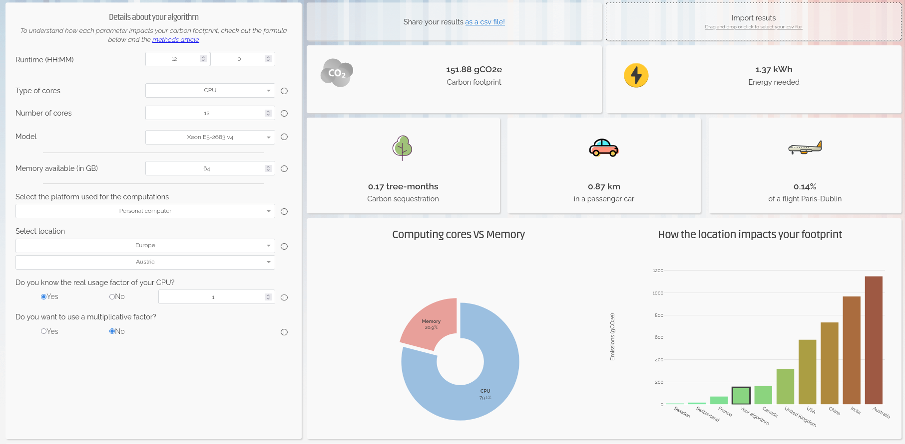

Digital research activities with sustainability issues
Last updated on 2026-05-13 | Edit this page
Overview
Questions
- What are the main sources of carbon emissions from computers, storage devices, and data centres?
- How do embodied and operational emissions compare for different types of hardware and storage technologies?
- What factors influence whether data centre computing is more or less carbon intensive than local computing?
- How can research data management practices and computational services contribute to carbon emissions?
Objectives
- Analyze the trade-offs between embodied and operational emissions for different computing and storage technologies.
- Calculate carbon emissions from personal devices and research workflows using appropriate tools.
- Evaluate the carbon efficiency of different research infrastructure choices, including local versus cloud computing and various storage strategies.
- Identify strategies to reduce emissions from research activities, including code optimization, data management plans, and carbon-aware computing.
Digital Research Infrastructure
Modern digital research depends on infrastructure ranging from individual computers and devices up to the globe spanning network of the internet. In this section we’ll look at some of the different components of digital infrastructure and their relation to carbon emissions.

Computers
Computers have become an indispensable component of modern life as well as digital research. These include everyday devices such as a laptop, desktops or phones as well as servers that are accessed remotely.
Computers draw electricity during use and also produce considerable embodied emissions from production and transportation. Both embodied and operational emissions play a significant role in the carbon footprint of computing devices, but how to estimate them and reduce them is very different.
Embodied emissions
Embodied carbon emissions do not change once the machine is in your hands: they only depend on the manufacturing and transport process. However, embodied carbon emissions per year are reduced the more years the machine is in use. Hence, the longer the lifetime of the machine, the lower their embodied carbon footprint per year.
Before replacing a computer, make sure that it is really needed and that it is no longer fit for purpose.
- Can you replace just some parts to extend its lifetime, eg. memory, GPUs?
- Can you give it another useful purpose?
- Can you donate it to charity (eg. see options in the Device Donation Scheme) to extend its useful life instead of trashing it (or recycling it)?
Operational emissions
The operational emissions of a device depend on its design and performance, but also on how, when and where it is used. For this reason, it is useful to consider energy usage first as a proxy for carbon emissions.
The power consumption of digital devices can be split into idle and usage-based consumption. Idle consumption is incurred when a device is powered but not carrying out any particular operation. Additional energy is consumed as the computational load placed on the device is increased. In particular, components like CPUs, GPUs and memory will draw additional electricity and cooling systems may have to work harder to remove excess heat.
There are a number of factors that affect operational power usage:
- Age: Modern computers have generally more advanced technology that makes them more energy-efficient than older ones.
- Type: Laptops are typically more energy efficient than desktops.
- Power management settings: That control when to go to sleep after a time of inactivity, or control the CPU frequency, etc.
- Peripherals: Especially, monitors, but also printers can also consume large amounts of energy.
Utilisation
The nature of both operational and embodied energy usage highlights the importance of utilisation in relation to computing hardware. The embodied emissions of a device are a fixed overhead, so the more computational work that is carried out over the lifetime of a device the more efficiently that overhead has been invested. Similarly, as there is a minimum power draw associated with idle usage, as utilisation of a device increases the power draw per unit of computational work decreases.
Operational vs Embedded Emissions
As a rule of thumb, for consumer electronic devices (that is laptops, desktops, tablets and phones) the embodied emissions are far in excess of operational ones. This emphasises the importance of maximising the lifetime of these devices.
For enterprise servers that have a much greater maximum operational power draw, the balance can vary due to a number of factors, not least the carbon intensity of the electricity used to power them and their utilisation. As the carbon intensity of electricity falls over time however embodied emissions are expected to increasingly dominate.
Estimating and Measuring Computer Emissions
Embodied Emissions
Finding the embodied emissions of a device relies on information provided by the manufacturer. The regulatory environment is evolving however increasingly there are legal requirements for manufacturers to publish Product Carbon Footprint (PCF) data for their products. Information can be easily found by searching the internet for “PCF” and the manufacturer’s name.
We’ll see some example PCF sheets below however it’s important to note that different manufacturers can use different methodologies and assumptions. This means it is not advised to directly compare PCF data between manufacturers.
Here is the HP EliteBook 840 G9 PCF Report:

If we exclude the Use section of the chart, which
obviously depends on the usage and the location, as discussed in the previous episode, the remaining, related to
production and transportation, accounts for about ~80% of the estimated
total, i.e. 160 kgCO₂e.
What are the embodied carbon emissions of your computer?
Find the model of the computer you are using right now to do this course and try to find out its embodied carbon emissions.
- Which part produces a larger carbon footprint?
- If it is a laptop and the battery is failing, how much carbon could you save if you just replace the battery for a new one instead of replacing the whole laptop?
Operational Emissions
The most direct and accurate option to get the idle energy usage of a consumer device is to use a plug in power meter. There are many models, but most will provide both the instantaneous power and the energy used over a period of time. This can be used both to ascertain the idle power draw of a system and to estimate the emissions of a running application by comparing to the baseline idle draw.
If measuring the energy usage of the entire device is not possible, modern hardware often supports reporting the energy consumption of different components. This varies based on the hardware and operating system but we’ll look at two common examples. RAPL (Running Average Power Limit) is a CPU feature which reports real time energy usage. Similarly nvidia-smi can report power consumption for NVIDIA GPUs.
In practice, low level interfaces like RAPL and nvidia-smi are difficult to use directly. There are more user friendly interfaces that can abstract over the particular hardware in use on your system. In particular, codecarbon is a Python application that can be used to directly measure hardware power consumption during the runtime of an application.
If it is impractical to make any direct measurements, there are also some methods to estimate power draw.
For idle power usage, one option is to check for an ECO Declaration for the equipment. For example, the ECO declaration of the HP EliteBook 840 G9 indicates an idle energy consumption of 22.67 kWh/year. This declaration also includes useful information about the product, like which components can be replaced or upgrade. The ECO Declaration is a voluntary standard so not all manufacturers provide it or it may contain incomplete information.
For estimating the power usage of a computational workload a useful resource is the Green Algorithms Calculator. This uses a simple model that combines information about the resource utilisation of a computational workload with details of the hardware it ran on.

What is the idle energy usage of your computer?
Like in the previous exercise, try to find the ECO Declaration for your computer in the manufacturer’s webpage.
- What is the reported idle energy consumption?
- How easy was it to find?
Storage Devices
Research datasets are increasingly large and replicated across multiple systems for reliability. As modern research practices move toward open data and long-term storage, the embodied and operational emissions of storage becomes a significant component of digital research’s environmental impact.

There are a few different storage mediums in common use:
- Solid-State Disk Drives (SSD): They use flash memory with no moving parts to store data, much like SD cards and USB drives, but with much larger capacity. Their embodied carbon emissions are high due to the rare metals needed for semiconductor manufacturing, while operational emissions are somewhat lower than for spinning disks.
- Hard Disk Drives (HDD): They store data on spinning magnetic disks. Embodied emissions are lower than those of SSDs but operational emissions are higher because their disks must spin continuously.
- Linear Tape-Open (LTO Tape): Magnetic tape technology used for long-term storage. Their embodied emissions are low, while their operational emissions are near zero.
Measuring and Estimating Data Storage Emissions
Similarly to computers, their associated carbon emissions can be split into operational and embedded components. Storage devices are often components of larger systems which can make it difficult to directly measure their power usage. Whilst some manufacturers do report sustainability data this is highly variable. In some cases storage device data may be included as a component of the PCF data for a complete system.
Given the general paucity of data there have been some studies that attempt to estimate emissions from different storage media. We’ve summarised some useful estimates below:
| Category | SSD | HDD | LTO tape |
|---|---|---|---|
| Embodied Carbon | High (16-32 kg)1 | Moderate (2-4 kg)1 | Low (~0.07 kg)3 |
| Operational Carbon | Low (2-5 kg)1 | Moderate - High (2-16 kg)1,2 | Low (~0 kg) |
| Lifespan | 5–10 years | 5-10 years | 30+ years |
* Emissions are in kgCO₂e per TB per year
While the numbers vary depending on manufacturers and reporting available, it is generally considered that SSDs have a higher carbon debt per unit of storage than HDDs4. However, recent data suggests that the difference for enterprise-grade drives is shrinking, and new SSDs have only 2x the embodied carbon of comparable HDDs5. While the numbers vary depending on manufacturers and reporting available, it is generally considered that SSDs have a higher ’carbon debt` per unit of storage than HDDs4. However, recent data suggests that the difference for enterprise-grade drives is shrinking, and new SSDs have only 2x the embodied carbon of comparable HDDs5.
SSDs allow data to be accessed almost instantly and are typically 10–100× faster than HDDs. LTO tapes offer the slowest access speeds, but they remain the preferred option for storing cold data due to their low cost, low embodied emissions and great energy efficiency.
Data Centres
Beyond personal computing devices like laptops and PC’s, much computing infrastructure is now accessed remotely. In this case the computers are generally hosted in a data centre, a large industrial facility that can contain thousands of servers and the supporting infrastructure required to allow remote access.
The carbon emissions associated with the computers and storage devices in a data centre are covered above. As purpose built facilities, data centres can host more specialised equipment and benefit from economies of scale. They also have additional emissions sources beyond the individual servers they house.
Data centre embodied emissions:
- data-centre construction: includes the concrete, steel, electrical infrastructure, etc.
- networking and supporting hardware: as the servers in a data centre are accessed remotely they must be serviced by network infrastructure such as switches and cables.
- cooling: the density of compute in data centres means they must have dedicated infrastructure for cooling. More information on this topic, in particular the water usage, is discussed below.
- electrical infrastructure: the high power demands of data centres can require construction of additional electrical infrastructure in the local area to support connection to the grid.
There are additional sources of operational emissions as well:
- power for infrastructure: this includes the networking infrastructure, cooling systems, lighting, etc.
- power distribution overheads: data centers deal with large amounts of electrical and encounter overheads in its distribution and transformation.
The energy efficiency of data centres is usually measured as their Power Usage Effectiveness (PUE), and determines how much of the energy entering the data centre reaches the IT equipment used for servers and storage compared to the energy used for other purposes like cooling.
\[ \mathbf{PUE} = \frac{\text{Total Facility Power}}{\text{IT Equipment Power}} \]

An average data centre has a PUE of around 1.59, meaning that for every 1 watt used to power computational resources, an additional 0.59 watts is spent on cooling and power distribution. Newer and larger data centres tend to be more efficient11, with a global average PUE of 1.41 in 202511.
The operational emissions of data centers depends heavily on the grid carbon intensity, with lower emissions in renewable-powered regions and higher emissions in fossil-fuel-dominated regions.
Despite the additional emissions sources, data centres have the ability to be far more energy efficient than the equivalent collection of individual computers or storage devices. This is due to their scale and specialisation and the provision of infrastructure that can be shared between many users.
| Category | Data Center | Local Equipment |
|---|---|---|
| Embodied Carbon | Lower (shared + efficient infrastructure) | Higher (duplication + under‑used hardware) |
| Operational Carbon | Usually lower (efficient cooling) | Usually higher (older facilities + local grid) |
| Energy Efficiency | High (fewer idle disks) | Generally lower |
| Utilisation | High (resources shared across many users) | Lower (over‑provisioning) |
Data centres and water usage
While this course focuses on the carbon emissions via the electricity usage, there is another big environmental factor associated to the running of data centres: water.
Water in data centres is used in huge amounts for cooling purposes. Recent studies suggest that medium-size data centres consume more than 1 million litres of water per day, while for large data centres, this number jumps to about 23 million litres per day, equivalent to the daily usage of about 50,000 households in the US.
While not as commonly available as the Power Usage Effectiveness (PUE), some data centres provide a Water Usage Effectiveness (WUE) that measures how much water is used per kWh of energy used. The ideal cases is 0 l/kWh, where no water at all is used, but most common values are around 1.9 l/kWh.
Use of water in data centres
Except in cooler locations where natural or air-only cooling (“free cooling”) can be enough to extract all the heat generated during computation from the data centres, in most cases, some level of water-based cooling is required. There are two broad methods for water-cooled data centres:
- Using air cooling with water evaporation in chillers. This is an open-loop method where water is lost into the atmosphere - hence removing it from the reservoir it was taken from, and therefore wasteful - but it is technically simpler to implement.
- Via direct liquid cooling, where the coolant (not necessarily water) is directly in contact with the processing unit. Direct-to-chip liquid cooling and immersive liquid cooling are two server liquid cooling technologies that dissipate heat while significantly reducing water consumption, but at a much higher cost and technical complexity.
Data Centres and The Cloud
The “cloud” is the delivery model for computing services over the internet. Cloud services are implemented and run on physical data centres owned and operated by cloud providers. Because cloud providers benefit from the advantages of data centre hosting, cloud deployments are often more energy and carbon efficient than many small scale on‑premise setups - but the cloud’s actual footprint still depends on the provider’s hardware, PUE, electricity grid mix and redundancy/replication practices.
What do you use data centres for?
There are way more things that we initially may think that make use of data centres, some related to digital research but plenty of others that do not.
In small groups, reflect and discuss which daily activities in your everyday life make use of data centres, sorting them into digital research, other work-related activities, and personal activities.
- Where do you have more items?
- Which category do you think consume more data centre power?
- After talking to your colleagues, did anything surprise you about what uses data centres?
Each group is likely to have a different list, but some of the items that are likely to be present in most of them are:
- Digital research
- Store some code in GitHub, Codeberg or other platform
- Run continuous integration workflows
- Run software - including AI training - in cloud services
- Store large amounts of research data with a cloud provider
- Other work related activities
- Send emails
- Meet colleagues via Teams or Zoom
- Store some office documents in Onedrive, Dropbox or similar
- Personal activities
- Use instant message apps with family and friends
- Send personal emails
- Stream music or films
- Check social media
- Order food
- Buy items in online shops
- Read online newspapers, blogposts or similar
- Check the weather forecast
- Check Google Maps or other similar applications
- Review your bank account
- …
As you see, a lot of our daily activities go through a data centre somewhere and while digital research will make heavy use of these facilities because they are intensive workflows, the sheer amount of other small tasks can easily offset the carbon emissions of the former when considered collectively.
Data Centre Expansion, Hyperscalers and AI

Increasingly, data centres are appearing in the media in a negative light due to their power and water consumption. Data centres consume around 2.5% of the UK’s electricity and the annual consumption is expected to increase by 4 times by 20308. In the U.S., data centres are predicted to use up to 12% of the country’s electricity by 2028, a 3x increase from 4.4% in 20259.
Much of this expansion is driven by a relatively small number of tech companies. The compute demands of training and serving AI models is also driving a noticeable increase. In the UK the Department of Science Innovation and Technology have projected a need for 6GW of AI ready data centre capacity by 203013 compared to overall current national demand of ~30-35 GW.
Additionally there have been reports of tech companies obscuring and under-reporting the emissions associated with data centres. This Guardian article for instance covers how, the industry frequently tries to obscure its true carbon footprint in a number of ways. One such way is the use of renewable energy certificates (Recs), where a data centre company can make itself appear to purchase some percentage of its energy from renewable sources, despite that energy not reaching the facility. The companies frequently report ‘market-based’ emissions, which are manipulated by the inclusion of Recs, but look out for the ‘location-based’ emissions figure for a less misleading view of their carbon footprint.
Measuring and Estimating Cloud Emissions
If you’re making use of resources housed in a data centre you are unlikely to be able to directly measure device or component level power consumption. In many cases when consuming cloud based resources you may not even know what hardware is being used. In this case you’re heavily dependent of information provided by the service operator or third party estimates. Particularly in the case of cloud providers this can become highly complex with many factors at play.
Some cloud providers do provide tooling for making exposing sustainability information. For example AWS Sustainability Console, Google Carbon Footprint and the Microsoft Emissions Impact Dashboard.
Research Activities
Simulation, Modelling and Data Analysis
The primary infrastructure required to carry out these activities is access to computation. This can be provided by a laptop, desktop or a server hosted in a data centre.
Miniming emissions from computation
What are relevant considerations that can help to minimise the emissions associated with computational workloads?
- Embodied and operational emissions are both key contributors. Optimally, a given amount of compute should be provided by the minimum associated embodied emissions. It’s therefore key to maximise utilisation of hardware rather than investing in more. This strongly promotes using computational computational services based on shared infrastructure (such as cloud or high performance computing facilities) where utilisation can be kept high and operational emissions are greatly reduced compared to individual desktops or laptops.
- Computational Architectures have become increasingly diverse in recent years both for CPUs and for accelerators (e.g. GPUs). Computational problems can have very different electricity consumption depending on the architecture used so choosing the right one can be very impactful.
- Doing less computation is also worth considering. This can take the form of planning computational workloads carefully to minimise resource usage or limiting work carried out for speculative or exploratory purposes.
- Code optimisation is the art of minimising the computational resources required to solve a given problem. This can take various forms depending on programming language and computational architecture but impressive speed ups can be obtained in some cases compared with unoptimised code.
- Carbon awareness is making your use of digital resources responsive to changes in carbon intensity of electricity generation. This can take different forms, for example, moving use to locations which have lower carbon intensities, changing the time at which you consume electricity to periods with lower carbon intensities or even making your workload intensity responsive to carbon intensity forecasts to minimise operational emissions.
Research Data Management
Storing Data
Generally when presented with a choice between buying your own storage devices or using a storage service, it will be more sustainable to use the latter. That said, local storage has a number of advantages, including greater control over data, predictable access speeds, and the ability to power equipment down when not in use. Typically research organisations will provide dedicated storage services for research data.
Miniming emissions from data storage
What are relevant considerations that can help to minimise the emissions associated with data storage?
- Delete unused or redundant data and avoid unnecessary replication.
- Keep frequently accessed data on faster storage (SSDs) and move “cold” or infrequently accessed data to slower but more energy efficient systems (tape storage)12.
- Use compression and efficient file formats to reduce storage requirements
- Consider cleaning and preprocessing data locally before storing.
- Choose storage options designed for infrequent access when appropriate.
Data Management Plans
The best time to think about how to manage you data is before you collect or generate it. This is the purpose of a Data Management Plan (DMP), a document that describes how you will handle your data during and after a research project. DMPs are often required by funding agencies and research institutions, but they are also a good practice to ensure that your data is well organised, documented and preserved.
In addition to being a good scientific practice, DMPs can also help you to reduce the carbon footprint of your data. Tracking and monitoring your data in this manner can help you to identify (and where possible, avoid) unnecessary data collection and storage. This will in turn help you to make informed decisions about your data management practices and making them more sustainable.
The UK Data Service provides a data management planning overview and a checklist of key points to consider when creating a DMP.
Use of Computational Services
Rather than directly using a computer, many digital research activities are provided by accessing services over the internet. Ultimately these services are provided by physical infrastructure however, as an end user, it can be very difficult to know how your activity corresponds to resource consumption. In these cases we usually have to depend on information from the service provider or make relative comparisons through proxy metrics.
It’s not possible to comprehensively cover the services used in modern digital research so below we’ve chosen a few exemplars to look at in detail.
Code Hosting and Continuous Integration/Deployment
The use of services such as GitHub and GitLab have become an indispensable component of modern software development. Notably these services provide access to compute resources to run Continuous Integration/Deployment (CI/CD) workflows. It’s common to run these workflows in a “matrix” configuration across variables such as operating system and software version which can lead to large parallel computational workloads executing.
CI/CD workflows are executed by servers acting as runners. Most services provide hosted runners for general use and support self-hosting a runner if you provide your own server. The latter case is amenable to the measurement and estimation methods discussed above. If using runners hosted by the service however, usually you will have no control or visibility over where workflows are executed or the underlying hardware they use. Direct measurement of energy usage in this case is not possible and there is insufficient information to use approaches like the Green Algorithms Calculator. Instead Eco CI is a tool that has been developed to estimate the carbon emissions of CI/CD workflows. It supports GitHub and GitLab.
To reduce emissions from CI/CD usage consider ways to reduce the number of workflow executions whilst maintaining strong quality assurance checks. Some strategies are explored in this poster from the Imperial Research Software Engineering team.
Generative AI
Increasingly, generative AI services are used to generate text, images and computer code with consequent diverse applications in digital research. Emissions associated with generative AI models can be split into two components:
- Training is carried out as a one-off process before you even interact with a model. These are all of the resources required to gather training data, design the architecture and parameterise model weights.
- Inference occurs whenever you interact with a model, typically by providing a prompt. This refers to the energy required to transmit your prompt, generate the response and transmit it back to you.
There are some important factors to bear in mind when interacting with LLMs that drive emissions:
- Model size: Larger models typically require more energy to run.
- Query count: The more queries you make to a model, the more energy it will consume. Hence, being mindful of the number of interactions and trying to batch queries when possible can help reduce emissions comparatively.
- Response token count: The length of the response generated by the model can also impact energy usage, as longer responses require more computation. Reducing the length of the response by being more specific in your prompt might help.
A useful tool to estimate the environmental impact of AI usage is EcoLogits. It’s available as a Python package or an online version is hosted by HuggingFace. It is currently limited to text generation with Large Language Models and only covers the inference stage. Whilst it supports as many open LLMs as possible it only has data for a limited number of proprietary LLMs where information is available about the model architecture.
References
- Swamit Tannu and Prashant J. Nair. 2023. The Dirty Secret of SSDs: Embodied Carbon. SIGENERGY Energy Inform. Rev. 3, 3 (October 2023), 4–9
- Based on Seagate EXOS X18
- Based on LTO 9 - FUJIFILM. Sustainability Report 2020. 2020
- Rteil, N., Kenny, R., Andrews, D., & Kerwin, K. (2025). Understanding the carbon footprint of storage media: A critical review of embodied emissions in hard disk drives. International Journal of Environmental and Ecological Engineering, 19(11), 263–270
- How Do the Embodied Carbon Dioxide Equivalents of Flash Compare to HDDs?
- Digital Decarbonisation - CO₂e Data Calculator
- WholeGrain DIgital Report
- National Energy System Operator
- U.S. Department of Energy - 2024 Report on U.S. Data Center Energy Use
- Uptime Institute, Large data centres are mostly more efficient, analysis confirms, 7 February 2024
- IEA, Energy and AI, April 2025, p259
- Sustainable computing in science - EMBL-EBI
- Data centres: planning policy, sustainability and resilience